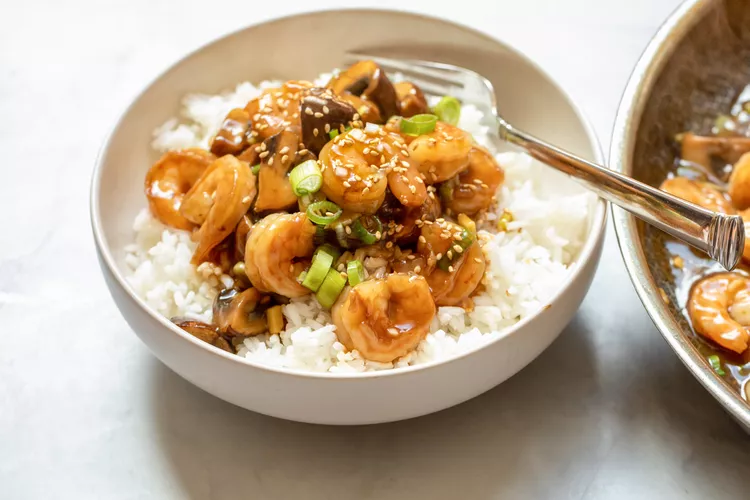

Back to the main page
Shrimp Stir Fry

Description
Every home cook should have a few easy stir fry recipes in their back pocket for quick weekday meals. I like stir fries that have just a few ingredients, a simple sauce, and can be cooked from start to finish in around 20 minutes. This shrimp and mushroom stir fry checks all those boxes and is a nice change of pace from a standard chicken and vegetable stir fry.
Ingredients
- 12 ounces cremini mushrooms, quartered or sliced
- 1 pound large shrimp (31-35 per pound), peeled
- 2 tablespoons olive oil
- 3 scallions, chopped
For the simple stir fry sauce
- 1 1/2 cups chicken stock
- 3 cloves garlic, minced
- 1/4 cup soy sauce
- 2 tablespoons cornstarch
Serving and garnish
- Cooked white rice, to serve
- Sesame seeds, for garnish
Method
- Make the stir fry sauce:
Whisk together the chicken stock, garlic, soy sauce, and cornstarch in a small bowl. Set aside
- Cook the mushrooms:
In a large skillet or wok over medium heat, add olive oil and mushrooms. Cook until the mushrooms soften and turn brown in spots around the edges, about 8 minutes.
- Add the shrimp:
Once the mushrooms are cooked to your liking, add the shrimp to the skillet. If the skillet is very dry, add a fresh drizzle of oil to it to ensure the shrimp doesn’t stick. Cook, stirring constantly, until shrimp are cooked through and no longer translucent, 2-3 minutes.
- Finish the stir fry:
Once shrimp are cooked, add all the stir fry sauce to the skillet and stir to combine. The finished sauce should just coat the stir fry ingredients, almost like a thin gravy. If the sauce thickens too much, stir in extra water by the tablespoon. If the sauce is too thin, let it simmer for 1-2 minutes and it will thicken. Lastly, stir in the chopped scallions.
- Serve:
Serve the shrimp stir fry spooned over cooked white rice garnished with sesame seeds.